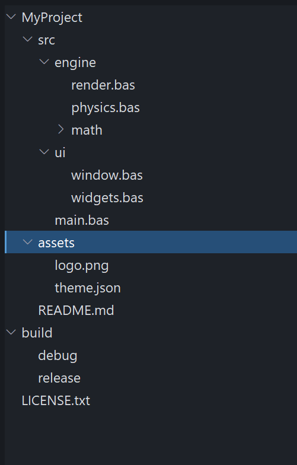
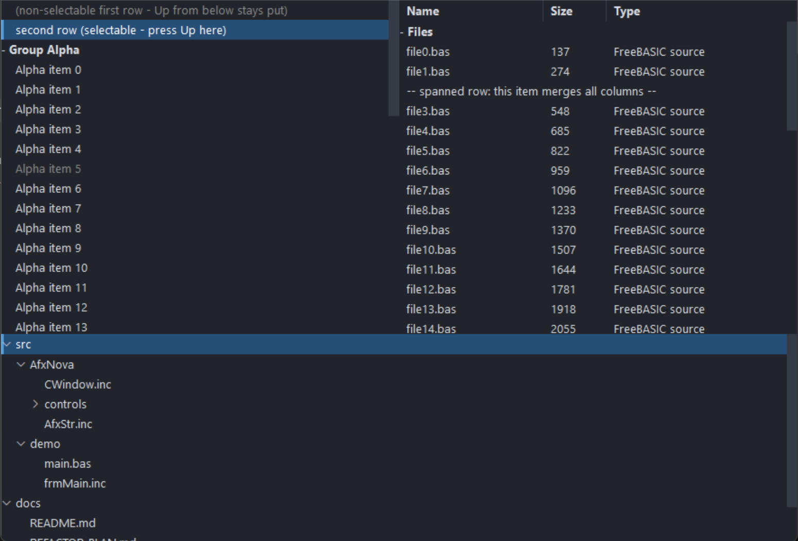

PsListTree
An owner-drawn list and tree control for FreeBASIC Win32 applications: a scrolling list of fixed-height rows that you paint yourself, with unlimited-depth tree nodes, control-drawn expand/collapse twisties, in-place label editing, collapsible group headers, single / multiple / extended selection, per-row tooltips, and an optional multi-column report mode driven by a resizable header band.
The name says it: PsListTree is a list box and a tree view in one control. As a tree it does what the traditional Win32 tree view (SysTreeView32) does — parent/child hierarchy of any depth, +/− twisties, per-level indentation, Left/Right collapse and expand, and F2 rename-in-place with begin/end callbacks that mirror TVN_BEGINLABELEDIT / TVN_ENDLABELEDIT. The differences are deliberate: it is fully owner-drawn (no visual-style dependency and every row pixel is yours), nodes are addressed by plain model index rather than opaque HTREEITEM handles, and a flat list, a grouped list and a deep tree are all the same control — a classic header/item group is simply the depth-1 case. See Tree view and in-place editing below.
It is the control you reach for when a system LISTBOX or SysTreeView32 almost fits but its appearance does not — a file explorer pane, a results list, a symbol browser, an autocomplete popup, a settings tree. There is no system control underneath: the whole surface is drawn in one pass through a double buffer, so nothing about the look depends on the visual style the user happens to be running.
The control owns three child windows for you — the row surface, an owner-drawn vertical scrollbar that appears only while the rows overflow, and a column header band that starts hidden. You never create or position any of them. What you supply is a row paint callback: the control decides which rows are drawn, where they sit, and what state each is in, and you decide what a row looks like.
Rows are addressed by model index — the order you added them. Collapsing a group hides rows but never renumbers anything.
What it looks like
As a tree — tree_demo.exe:

A multi-level tree built with PsListTree_AddNode: per-depth indentation, control-drawn chevron twisties (˅ on expanded parents, › on the collapsed math node), leaf nodes with no twisty, the selected root with its focus bar, and F2 / click-to-rename editing. This is exactly the behaviour of a traditional tree view, drawn entirely by the control.
As a list and a report — main.exe:

The same control in its list modes. On the left a grouped single-column list — a collapsible group header, one selected row, and rows that keep their selection across a collapse. On the right, report mode: a PsColumnHeader band (Name / Size / Type), a group row, and an embedded PsVScrollBar down the right edge. Public indices in both are model indices; the visible index space never leaks out.
Requirements
Files to copy into your project:
| File | Purpose |
|---|---|
PsListTree.bi | Declarations — types, callbacks, constants, function prototypes |
PsListTree.inc | Implementation |
PsColumnHeader.bi / .inc | The column header band the control embeds — see PsColumnHeader.md |
PsVScrollBar.bi / .inc | The vertical scrollbar the control embeds |
PsBufferPaint.bi / .inc | The flicker-free drawing surface everything paints through |
PsTipHost.bi / .inc | The tooltip backend switch the control holds — not a control, no window of its own |
PsTooltip.bi / .inc | The owner-drawn tooltip PsTipHost can drive instead of the system one |
All ten files are required even if you never define a column, never touch the scrollbar and never leave the default system tooltip: the control creates both children unconditionally, and PsListTree.bi / .inc include the tooltip pair themselves. They add no include line of their own to your host — see Include order below.
Only if you enable in-place label editing (PsListTree_EnableLabelEdit), copy four more — the editor is a PsTextBox, which uses PsPopupMenu for its right-click menu:
| File | Purpose |
|---|---|
PsTextBox.bi / .inc | The single-line editor created over a row during a rename |
PsPopupMenu.bi / .inc | The editor's context menu |
Include their implementations before PsListTree.inc (it calls into them), and add the pump call under In-place label editing. A control that never enables editing needs none of this.
AfxNova is required. The control is built on CWindow, and PsBufferPaint draws through AfxNova\CGdiPlus.inc. Sources include AfxNova relative to the workspace root (#include once "AfxNova\CWindow.inc"), so builds need the workspace root on the include path:
fbc64.exe -i "C:\dev" main.basInclude order — this one bites. PsListTree.bi includes only PsBufferPaint.bi. It does not include PsVScrollBar.bi or PsColumnHeader.bi, yet it names types from both: CVSCROLL_DEFAULT_WIDTH and VScrollPaintCallbackSub from the scrollbar, and HDR_WidthChangedCallbackSub, HDR_ClickCallbackSub, HDR_AutoSizeCallbackFunc, HDR_PaintCallbackSub and HDR_TooltipCallbackFunc from the header. It therefore compiles only at an include site that has already pulled those two in. Include the four implementation files in exactly this order:
#include once "PsBufferPaint.inc"
#include once "PsVScrollBar.inc"
#include once "PsColumnHeader.inc"
#include once "PsListTree.inc"If you enable label editing, add the editor's two implementations before PsListTree.inc:
#include once "PsBufferPaint.inc"
#include once "PsVScrollBar.inc"
#include once "PsColumnHeader.inc"
#include once "PsPopupMenu.inc" ' editing only
#include once "PsTextBox.inc" ' editing only
#include once "PsListTree.inc"Get the order wrong and the errors point at PsListTree.bi, naming types rather than the missing include.
PsTipHost and PsTooltip are not in either list on purpose. PsListTree.bi includes PsTipHost.bi and PsListTree.inc includes PsTipHost.inc (which pulls in PsTooltip.inc), so the four files must be present on disk but you never name them. Adding #include once "PsTooltip.inc" yourself is harmless — the headers are #pragma once — and equally unnecessary.
The AfxNova headers come first, before any of the above:
#include once "windows.bi"
#include once "AfxNova\CWindow.inc"
#include once "AfxNova\AfxStr.inc"
#include once "AfxNova\AfxGdiplus.inc"
using AfxNovaGDI+ must be running before the first repaint and must outlive the last one. All geometry is rendered through GDI+, so bracket your message loop:
dim as ULONG_PTR gdipToken = AfxGdipInit()
' ... create windows, run the message loop ...
AfxGdipShutdown( gdipToken )AfxGdipShutdown must come after every window is destroyed, because each repaint builds and tears down a PsBufferPaint.
Never name an identifier ok. GDI+ defines Ok = 0 as a Status enum value in namespace AfxNova, and hosts customarily say using AfxNova. An existing variable, parameter or function called ok becomes a duplicate definition the moment you adopt these files. Use bOK instead.
The message-pump filter is needed only for label editing. If — and only if — you call PsListTree_EnableLabelEdit, you must call PsListTree_FilterMessage( @msg ) in your loop, ahead of IsDialogMessage (see Tree view and in-place editing). Without editing there is nothing to call, and the only pump requirement is the ordinary dialog-manager one below.
For Tab navigation, call IsDialogMessage in your message pump. The row surface is a tabstop, and the container declares itself a control parent, so the dialog manager will step into the control — but only if you give it the chance:
do while GetMessage( @uMsg, null, 0, 0 )
if uMsg.message = WM_QUIT then exit do
if IsDialogMessage( hWndForm, @uMsg ) = 0 then
TranslateMessage @uMsg
DispatchMessage @uMsg
end if
loopWithout it, mouse operation and the keyboard are unaffected once the list has focus — only Tab navigation is lost. The arrow keys are safe either way: the surface answers WM_GETDLGCODE with DLGC_WANTARROWS or DLGC_WANTCHARS, so IsDialogMessage does not steal them for tab-navigation.
Give something the focus at startup. IsDialogMessage acts only when the focused window is already a descendant of the window you pass it. A real dialog does this in WM_INITDIALOG; an ordinary window must call SetFocus on its first control itself. Skip it and the first Tab does nothing, which is indistinguishable from the tabstops being broken. Clicking the list also gives it focus, so this only affects a keyboard-first start.
Quick start
' Create it. The control is created zero-sized and hidden; place it yourself.
dim as HWND hList = PsListTree_Create( hWndParent, IDC_MYFORM_LIST )
SetWindowPos( hList, 0, x, y, cx, cy, SWP_NOZORDER or SWP_SHOWWINDOW )
' You MUST supply a row painter -- without one, rows are not drawn at all.
PsListTree_SetPaintCallback( hList, @MyList_PaintRow )
' Optional: observe mouse messages, supply tooltips, hear about selection moves.
PsListTree_SetMessageCallback( hList, @MyList_Message )
PsListTree_SetTooltipCallback( hList, @MyList_Tooltip )
PsListTree_SetSelChangeCallback( hList, @MyList_SelChange )
' Appearance. The font is borrowed -- you keep ownership and destroy it yourself.
PsListTree_SetBackColor( hList, theme.BackColor )
PsListTree_SetFont( hList, ghFont(GUIFONT_10) )
PsListTree_SetScrollBarColors( hList, theme.BackColorScrollBar, _
theme.ForeColorScrollBar, theme.ForeColorScrollBarHot )
' Selection mode. Both off = single-select.
PsListTree_SetExtendedSelect( hList, true ) ' Shift ranges / Ctrl toggles
' Bulk load, batched: one map rebuild and one repaint instead of one per row.
PsListTree_BeginUpdate( hList )
PsListTree_AddHeader( hList, "Group Alpha" )
for i as integer = 0 to 20
PsListTree_AddString( hList, "Alpha item " & i, 1000 + i )
next
PsListTree_EndUpdate( hList )
' Silent -- the SelChange callback does not fire for this.
PsListTree_SetCurSel( hList, 1 )And the row painter:
sub MyList_PaintRow( byval p as PSLISTTREE_PAINTINFO ptr )
' State priority is yours to choose: selected > hot > normal is the usual one.
dim as COLORREF backclr, foreclr
if p->isSelected then
backclr = theme.BackColorSelect : foreclr = theme.ForeColorSelect
elseif p->isHot then
backclr = theme.BackColorHot : foreclr = theme.ForeColorHot
else
backclr = theme.BackColor : foreclr = theme.ForeColor
end if
p->b->SetForeColor( foreclr )
p->b->SetBackColor( backclr )
p->b->PaintRect( @p->rc ) ' the whole row: selection spans it
if p->isHeader then
dim as DWSTRING wszPrefix
if p->isCollapsed then wszPrefix = "+ " else wszPrefix = "- "
p->b->SetFont( ghFont(GUIFONTBOLD_10) )
p->b->PaintText( wszPrefix & p->wszCaption, @p->rc, DT_LEFT )
else
dim as RECT rcText = p->rc
rcText.left += 16
p->b->PaintText( p->wszCaption, @rcText, DT_LEFT )
end if
end subThat is the whole minimum. To turn on report mode, add columns and show the band:
PsListTree_AddColumn( hList, "Name", 160 )
PsListTree_AddColumn( hList, "Size", 70 )
PsListTree_AddColumn( hList, "Type" ) ' the fill column (default: the last)
PsListTree_SetHeaderPaintCallback( hList, @MyHeader_PaintColumn )
PsListTree_SetHeaderBackColor( hList, theme.BackColorScrollBar )
PsListTree_SetHeaderFont( hList, ghFont(GUIFONTBOLD_10) )
PsListTree_ShowHeader( hList, true )
' Cell text: column 0 IS the row's text; columns 1..N are per-row cells.
dim as integer r = PsListTree_AddString( hList, "file0.bas" )
PsListTree_SetCellText( hList, r, 1, "137" )
PsListTree_SetCellText( hList, r, 2, "FreeBASIC source" )Your row painter then sees p->columnCount > 0 and a p->cells array — fill the full row background first, then draw each cell inside its own rect:
dim as integer pad = PsColumnHeader_GetPadding( PsListTree_GetHeader( hList ) )
for c as integer = 0 to p->columnCount - 1
dim as RECT rcCell = p->cells[c].rc
rcCell.left += pad : rcCell.right -= pad
p->b->PaintText( p->cells[c].wszText, @rcCell, DT_LEFT or DT_END_ELLIPSIS )
nextConcepts
The handle is a real HWND
PsListTree_Create returns an ordinary window handle, and every PsListTree_* function takes it. It is not an opaque type, so you can treat the control as the window it is — SetWindowPos to place and size it, ShowWindow to show it, GetDlgItem to find it by the CtrlID you passed at creation.
That handle is the container. It hosts three children: the row surface, the scrollbar and the header band. Every function resolves them internally. Never pass a child handle to a PsListTree_* function — results are undefined.
The children take consecutive control ids: the surface gets CtrlID, the scrollbar CtrlID + 1, the header CtrlID + 2. Leave that much room around whatever id you pick.
It is created zero-sized and hidden
PsListTree_Create gives the container the styles WS_CHILD, WS_CLIPSIBLINGS and WS_CLIPCHILDREN. WS_VISIBLE is deliberately absent, so a newly created control shows nothing until you size it and show it. That lets you build and configure the list — colours, font, columns, contents — before it is ever seen.
Row indices are model indices
Rows are addressed by the order they were added, independent of what is on screen. Collapsing a group does not renumber anything, and hidden rows keep working with every row API, selection included. Internally the control maps model rows to visible positions; that mapping never leaks out. Everything you receive — PSLISTTREE_PAINTINFO.itemID, PSLISTTREE_MESSAGEINFO.idx, PsListTree_GetCurSel, PsListTree_GetSelItems, PsListTree_GetTopIndex — is a model index too.
PsListTree_GetCount is every row in the model. PsListTree_GetVisibleCount is the rows currently on show. They differ exactly when something is collapsed.
Groups, and trees
Every row carries a tree level (0 = top-level), so the control does hierarchies of any depth — see Tree view and in-place editing below. The classic flat group is just the depth-1 case: a header (PsListTree_AddHeader) is a level-0 parent and the items (PsListTree_AddString) after it are its level-1 children, hidden when the header collapses. Build deeper structure with PsListTree_AddNode. Collapsing any node hides its entire subtree.
Headers are ordinary rows in every other respect: they are selectable, they are returned by PsListTree_GetSelItems, and they carry itemData. Use PsListTree_IsHeader to tell them apart — "header" is now just a styling flag, independent of whether a node has children.
Clicking a header toggles its group and leaves the selection alone — a fold gesture, not a select. (A plain AddNode parent instead toggles only via its twisty; the label selects.)
Selection lives on the rows
Selection is a per-row flag in the model, not a bit inside a system listbox. That is what makes it survive collapse and expand, and it is why a hidden row can be selected. Three modes, and the two flags are mutually exclusive:
| Mode | How to get it | Mouse behaviour |
|---|---|---|
| Single | both off (the default) | Each click selects exactly one row |
| Extended | PsListTree_SetExtendedSelect( h, true ) | Shift extends a range from the anchor, Ctrl toggles one row |
| Multiple | PsListTree_SetMultiSelect( h, true ) | Every click toggles one row, checklist style |
Setting either mode clears the other. PsListTree_GetCurSel reports the focused row (the caret), which is not the same as "the selection" once more than one row can be selected — use PsListTree_GetSelItems for that.
Everything is painted in one pass
One WM_PAINT on the surface fills the whole client with BackColor and then calls your paint callback once per visible row, all into a single buffer. There is no per-row message and no per-row buffer.
p->rc and the cell rects are in the surface's client coordinates, not in a row-sized buffer starting at y = 0. Derive everything from p->rc and you never have to care.
Rows below the last one are not painted at all; the control's background already covers that strip, which is why an empty list needs no special handling from you.
If you set no paint callback, no rows are drawn — only the background. That is the one callback the control genuinely needs.
The scrollbar manages itself
The control creates a PsVScrollBar, positions it on the right edge, keeps its range in step with the model, and auto-hides it whenever the rows fit — at which point the row surface reclaims the full client width. You never call SetRange or SetPos.
What is left to you is appearance: PsListTree_SetScrollBarWidth, PsListTree_SetScrollBarColors, PsListTree_SetScrollBarPaintCallback, or PsListTree_GetScrollBar for direct PsVScrollBar_* calls.
The mouse wheel is handled on the row surface, not by the bar: one notch scrolls SPI_GETWHEELSCROLLLINES rows (re-read per message, and capped at one page), with the sub-notch remainder accumulated so a precision touchpad scrolls smoothly rather than in jumps. The thumb follows.
Columns are optional, and the header band owns them
With no columns defined, the control paints as a single-column list and your painter sees p->columnCount = 0.
Define columns and one thing changes: item rows arrive with a cells array giving each column's x-span. Group-header rows never get cells — they always span the full width, so columnCount is 0 for them regardless.
The column model lives in the embedded PsColumnHeader, which is the single store for widths, minimums and the fill designation. The PsListTree_*Column* functions are wrappers that delegate to it. See PsColumnHeader.md for the width, minimum-width and fill rules.
Column definitions and cell text are independent. Cell storage is sparse and per row, so you can populate rows before or after defining columns; a cell never set reads back "". The band itself starts hidden — columns still lay out and rows still paint in columns, you simply get no interactive header strip until PsListTree_ShowHeader( h, true ).
The header band spans the full container width, over the scrollbar strip, so column geometry never shifts when the scrollbar auto-hides.
Column 0 is the row's text
PsListTree_GetText/SetText and the cell functions with col = 0 address the same storage. Columns 1..N live in the row's own sparse cell array. This is why a list written before columns existed keeps working unchanged.
Inserting or deleting a column shifts every row's cell storage across that alias — insert a column at 0 and each row's text becomes its column 1 cell.
Spanned rows
An ordinary, selectable row can be made to paint as one cell across the whole column band instead of one cell per column — PsListTree_SetRowSpanColumns( h, row, true ). Use it for a section note, a "no results" line, or any wide message row that lives among columned rows.
Its text stays in column 0 (PsListTree_GetText / GetCellText( h, row, 0 )). At paint time the callback receives p->columnCount = 1 with p->isSpanned = true; cells[0].rc runs from column 0's own left to the last column's right (the same left a normal column-0 cell gets, so the spanned text lines up under column 0), and cells[0].wszText is the column-0 text. A painter that already loops for c = 0 to columnCount - 1 draws it correctly with no new branch — it simply draws one wide cell. Selection and hover still fill the full p->rc, and the row selects, hot-tracks and keyboard-navigates like any other.
Two details worth knowing:
- With no columns defined, a spanned row is already full-width (
columnCount = 0); the flag only advertises the intent viap->isSpanned. - A spanned row is exempt from the column-shift above: inserting or deleting a column never moves its text out of column 0, so its caption cannot be silently blanked.
Group headers are not spanned rows — they have their own isHeader path and carry isSpanned = false.
Drag-and-drop reordering
Opt in with PsListTree_SetDragReorder( h, true ) (default OFF) and the user can drag rows to new positions inside the same list:
- What drags — press an item and move past the system drag threshold. If the pressed row is part of a multi-selection, the whole selection moves (gathered contiguously at the drop, keeping its relative order, even if it was non-contiguous); otherwise just that one row. Headers and non-selectable rows are never draggable.
- Where it drops — a horizontal insertion line shows the target gap. Dropping on a header highlights it and inserts the block as that header's first children (a collapsed header expands on drop). Because grouping is positional, a row dropped into another group simply belongs to it afterward.
- Feedback — the insertion line / header highlight paints in
SetDragIndicatorColor(accent blue by default). Dragging near the top/bottom edge auto-scrolls so off-screen targets are reachable. Esc — or any loss of mouse capture — cancels the drag with no move.
The control moves its own model and fires two optional callbacks: CanDrop just before (return FALSE to reject — it receives the source rows and the drop-target row's ROWINFO), and DragDrop just after (the block's new first row and count, so you can resync parallel data via itemData). This is the only gesture in the control that takes mouse capture, and only while a drag is actually in progress.
PsListTree_MoveRows( h, srcRows(), insertBefore ) performs the same reorder programmatically — silent (no DragDrop), like every other setter.
Non-selectable rows
A row can be made non-selectable — PsListTree_SetRowSelectable( h, row, false ). It then cannot be selected or focused by any path, and keyboard navigation skips over it:
- Mouse — clicking it changes nothing (no selection, no focus). The host still sees the raw click through the message callback.
- Keyboard — arrows, PageUp/Down, Home and End step past it to the nearest selectable row. A single-step arrow that would only reach non-selectable rows leaves the caret where it is; the paging and Home/End keys always land on some selectable row if one exists.
- Programmatic —
SetCurSelreturns -1 and no-ops,SetSel( …, true )returns FALSE,SelectAllskips it, and a Shift-range selects every selectable row it spans but not this one.
The rule is a hard invariant: a non-selectable row is never selected and never focused. If you mark a row non-selectable while it is the current/selected row, its selection is cleared and the caret is dropped (silent, repaints). To select it again, clear the flag first.
The paint callback gets p->isSelectable, so a painter can grey the row — that is cosmetic; the control does the blocking regardless of how you draw it. The flag is independent of the others: a row can be spanned and non-selectable at once (a section note that fills the width and can't be picked).
Batch bulk changes
Every model mutator rebuilds the visible map and repaints. Wrap a bulk load in PsListTree_BeginUpdate / PsListTree_EndUpdate and that collapses to one rebuild and one repaint, turning an O(n²) load into O(n). The pairs nest.
Programmatic changes are silent
PsListTree_SetCurSel, SetSel, SelectAll and Clear never fire the SelChange callback. It reports user action only — a click, or a keyboard move. This follows Win32's own LB_SETCURSEL / LBN_SELCHANGE split, and it means you can call the setters from inside your own handler without recursing.
The same rule holds for column widths: PsListTree_SetColumnWidth repaints but fires no resize callback. Only a user drag or an autosize notifies.
Pixels, and who scales them
| Setting | Unit | Default |
|---|---|---|
Row height (PsListTree_SetRowHeight) | Unscaled — DPI-scaled internally | 22 |
Header height (PsListTree_SetHeaderHeight) | Unscaled — DPI-scaled internally | 24 |
Scrollbar width (PsListTree_SetScrollBarWidth) | Unscaled — DPI-scaled at layout | 12 |
| Column widths and minimums | Pixels, used as given | 100 / 0 |
| Header caption padding | Pixels after create; the default is DPI-scaled at create | 8 |
Row height and header height are the trap in both directions: hand them a value you have already scaled and it gets scaled twice.
Keyboard
The row surface handles these itself and consumes them, so they never reach the message callback:
| Key | Action |
|---|---|
| Up / Down | Move the focus one visible row |
| PageUp / PageDown | Move the focus one page |
| Home / End | First / last visible row |
| Left | Collapse an expanded header; from an item, jump to its header |
| Right | Expand a collapsed header; from an expanded one, step to the first child |
| Space | Toggle the focus row's selection (multiple / extended), or select it (single) |
Shift and Ctrl modify the arrow and page moves the same way they modify a click. Because WM_KEYDOWN never reaches the message callback, SelChangeCallback is the only way to observe keyboard navigation.
Every move ensures the new focus row is on screen.
Hover, tooltips and focus
Exactly one row is hot at a time. Hover state is cleared both by WM_MOUSELEAVE and by a 100 ms cursor poll, because WM_MOUSELEAVE is not reliably delivered on fast exits.
Tooltips are resolved on demand: with no tooltip callback the hovered row's own text is used; with one, whatever it returns, and "" suppresses the tip entirely. The tip is popped when the hot row changes so the next hover re-queries.
The tip is drawn by the system tooltip unless you move the instance onto the owner-drawn PsTooltip with PsListTree_SetTooltipMode. That choice changes only the drawing and the timing — never the text, which comes from the rule above either way. See Tooltips under the API reference.
A left click calls SetFocus on the row surface before your message callback runs. If the list must not hold focus — an autocomplete popup over an editor, say — put the focus back from your callback.
Lifetime
The control frees itself, its tooltip and all three children when its window is destroyed. Fonts you pass in stay yours: the control stores the HFONT and never destroys it.
Tree view and in-place editing
The same control, driven as a treeview: unlimited depth, control-drawn twisties, per-depth indent, and label editing. tree_demo.exe (build it with build_tree.bat) is a focused harness for exactly these features; main.exe (from build.bat) exercises everything else.
Every row carries a tree level (0 = top-level), and the tree lives in ordinary array order: a node's whole subtree is the contiguous run of deeper-level rows right after it, so parent, child count and "has children" are all derived — there is no separate tree object to keep in sync. Collapsing a node hides its entire subtree, at any depth. The old flat header/item model is just the depth-1 case of this, so nothing about the existing API changed.
Building a tree
PsListTree_AddNode( h, parentRow, Text ) appends a child under parentRow (-1 = a new top-level node); PsListTree_InsertNode places one at a specific child position. Query the shape with PsListTree_GetLevel / GetParent / GetChildCount / HasChildren.
dim as integer proj = PsListTree_AddNode( hTree, -1, "MyProject" )
dim as integer src = PsListTree_AddNode( hTree, proj, "src" )
PsListTree_AddNode( hTree, src, "main.bas" )
dim as integer eng = PsListTree_AddNode( hTree, src, "engine" )
PsListTree_AddNode( hTree, eng, "render.bas" )Twisties and indentation are opt-in
Both default OFF, so a control that only builds flat lists or legacy groups is visually unchanged. Turn them on for a tree:
PsListTree_SetTreeIndent( hTree, true ) ' indent column 0 by depth
PsListTree_ShowTwisty( hTree, true ) ' control draws the chevron + owns its hit-rect
PsListTree_SetTwistyFont( hTree, hSymbolFont ) ' a Segoe Fluent Icons HFONTWith the twisty on, clicking it toggles the node without touching the selection; clicking the label selects. (A legacy AddHeader row keeps its whole-row toggle.) In your row painter, draw your column-0 text at p->rc.left + p->indent (that offset already includes the reserved twisty band, so parents and leaves at the same depth line up). Only column 0 is indented — other columns keep their x. To draw your own glyph instead of the built-in chevron, call ShowTwisty(false) and read p->rcTwisty / p->level / p->hasChildren / p->isExpanded.
Keyboard: Left collapses an expanded node or jumps to its parent; Right expands a collapsed node or steps to its first child — at any depth.
In-place label editing
Opt in with PsListTree_EnableLabelEdit( h, true ). An edit starts on F2 (on the focused row), on PsListTree_BeginEdit, or — with PsListTree_SetClickToEdit( h, true ) — on a click of the row that is already current (explorer rename). Enter commits, Esc cancels, clicking away commits. The editor is a single-line PsTextBox created over the caption and destroyed on commit or cancel.
Any column is editable, but only one has a gesture. F2, Enter and click-to-edit all open whichever column PsListTree_SetEditColumn names — column 0, the caption, by default. To edit a different column from a click, resolve which one the click landed in with PsListTree_GetColumnRect from your message callback and call PsListTree_BeginEdit( h, row, col ), which is never constrained by the gesture column. Enter opens an editor only when PsListTree_SetEnterEdits( h, true ) is on; it is off by default because claiming Enter would otherwise take it from your dialog's default button.
Theme the editor with PsListTree_SetEditColors — the control creates it lazily and owns it, so there is no handle for you to reach, and without this it renders black on white whatever the list around it looks like. PsListTree_SetEditTextInset lines its text up with the inset your painter uses for cell text, and PsListTree_SetEditSelectAll( h, false ) puts the caret at the end instead of selecting everything.
Pump obligation. A host that enables editing MUST call
PsListTree_FilterMessage( @msg )in its message loop, ahead ofIsDialogMessage— otherwiseIsDialogMessageeats Enter (as "press the default button") and Esc (as "cancel") before they reach the editor. A host that never enables editing needs no pump call.
do while GetMessage( @msg, null, 0, 0 )
if msg.message = WM_QUIT then exit do
if PsListTree_FilterMessage( @msg ) then continue do ' editing hosts: BEFORE IsDialogMessage
if IsDialogMessage( hWnd, @msg ) = 0 then
TranslateMessage( @msg ) : DispatchMessage( @msg )
end if
loopBeginLabelEdit can veto an edit before it starts; EndLabelEdit receives the new text and can reject it (the row keeps its old caption). Register both under Callback registration; the typedefs are in Callbacks.
Behaviour and limits
Firm properties of the control, not settings:
- Nothing is drawn without a paint callback. The background is filled, and that is all.
- All rows are the same height. There is no per-row height, so a group header cannot be taller than its items.
- Legacy group headers do not nest, though tree nodes do.
AddHeader+AddStringbuilds a depth-1 group that runs to the next header; for real depth useAddNode/InsertNode. - The data setters do not repaint; the text setters do.
PsListTree_SetTextandSetCellTextinvalidate (coalesced byBeginUpdate/EndUpdate, so a wrapped bulk load still costs one repaint).SetItemDataandSetItemDataExtrachange the model and return — they draw nothing, which is right, since neither is on screen unless your painter puts it there. CallPsListTree_Refreshif yours does. PsListTree_SetBackColordoes not repaint either. It stores the colour and returns the previous one. Set it before showing the control, or follow it withPsListTree_Refresh.- Group-header rows never receive cells. They span the full width even in report mode, so
columnCountis 0 for them. - The control does not clip between cells. Cell rects are handed to you as computed; drawing text wider than its cell will spill into the next one.
DT_END_ELLIPSISis the answer. - The control never sorts.
PsListTree_SetColumnClickCallbackis the hook; reordering the rows is yours. - The
cellspointer is valid only during the paint callback. It points at control-owned scratch reused for every row. Copy anything you need to keep. - Cell text survives
PsListTree_ClearColumns. Clearing column definitions does not clear row data — the two are deliberately independent. PsListTree_GetColumnWidthon the fill column returns its laid-out width, not the stored one. Setting a width on the fill column stores it but has no visual effect until that column stops being the fill.- The message callback's return value has no effect for the button messages. For
WM_LBUTTONDOWN,WM_LBUTTONUP,WM_RBUTTONDOWNandWM_LBUTTONDBLCLKthe surface consumes the message either way, and for the button-down the control's own selection or collapse handling has already run by the time you are called. Returning TRUE suppressesDefWindowProconly forWM_MOUSEMOVE,WM_MOUSEHOVER,WM_MOUSELEAVEandWM_MOUSEWHEEL. PSLISTTREE_MESSAGEINFO.idxis filled only for the button and hover messages. It stays -1 forWM_MOUSEMOVE,WM_MOUSELEAVEandWM_MOUSEWHEEL.- Clicks that land below the last row do not reach the message callback at all, for any button message.
- The wheel is reported only when it actually scrolls. A wheel gesture against the end of the list does not call the message callback.
- The header band's own
WidthChangedslot belongs to the control. Subscribe withPsListTree_SetColumnResizeCallback, never withPsColumnHeader_SetWidthChangedCallbackon the handle fromPsListTree_GetHeader. Every other header callback passes straight through. - No horizontal scrolling. Columns wider than the client run off the right edge and are clipped there.
- No checkbox column, no icons. Anything of that kind is drawn by your painter and driven by your message callback. (In-place editing and drag-reorder are built in, both opt-in.)
- Only one column has an editing gesture. F2, Enter and click-to-edit all open whichever single column
PsListTree_SetEditColumnnames (default 0). Editing any other column is programmatic: resolve the clicked column withPsListTree_GetColumnRectand callPsListTree_BeginEditwith it. - Switching tooltip backend cannot change what a tip says. Both backends resolve text through the same rule — your tooltip callback if set, otherwise the row's own text. The backend decides only how the tip is drawn and driven.
API reference
Every function takes the handle from PsListTree_Create as its first argument, written h in the tables below.
Creation
| Function | Description |
|---|---|
PsListTree_Create( hWndParent, CtrlID ) as HWND | Creates the control as a child of hWndParent and returns the container's handle. CtrlID becomes its GWLP_ID; the three children take CtrlID, CtrlID + 1 and CtrlID + 2. Created zero-sized and hidden — place it with SetWindowPos. |
Content
Add* and Insert* return the new row's model index, or -1 on failure.
| Function | Description |
|---|---|
PsListTree_AddString( h, Text, itemData = 0, itemDataExtra = 0 ) as integer | Appends an item row. |
PsListTree_AddHeader( h, Text, itemData = 0, itemDataExtra = 0 ) as integer | Appends a group-header row. Items added after it belong to this group until the next header. |
PsListTree_InsertString( h, row, Text, itemData = 0, itemDataExtra = 0 ) as integer | Inserts an item at row, shifting later rows down. row is clamped to [0, count] and the index actually used is returned. Inserts an item, never a header. |
PsListTree_AddNode( h, parentRow, Text, itemData = 0, itemDataExtra = 0 ) as integer | Appends a child under parentRow (-1 = a new top-level node), after the parent's whole existing subtree, at parent.level + 1. Returns the new model index, or -1. See Tree view and in-place editing. |
PsListTree_InsertNode( h, parentRow, childIndex, Text, itemData = 0, itemDataExtra = 0 ) as integer | Inserts among parentRow's direct children at childIndex (clamped; past the end appends). parentRow = -1 inserts a top-level node. Returns the new model index, or -1. |
PsListTree_DeleteString( h, row ) as boolean | Deletes the one row. FALSE for an invalid index. To remove a whole subtree, delete the parent's descendants first (see GetChildCount / GetLevel). |
PsListTree_Clear( h ) | Removes every row. Also resets the focus and anchor rows to -1, so a stale caret cannot survive into the next list. Silent. |
PsListTree_GetCount( h ) as integer | Every row in the model. |
PsListTree_GetVisibleCount( h ) as integer | Rows currently on show — headers plus the items of expanded groups. |
PsListTree_GetText( h, row ) as DWSTRING | The row's text, which is also its column 0 cell. "" for an invalid row. |
PsListTree_SetText( h, row, Text ) as boolean | Sets it. FALSE for an invalid row. Does not repaint — call PsListTree_Refresh if the list is on screen. |
PsListTree_GetCellText( h, row, col ) as DWSTRING | Column col's text for that row. col = 0 is the row's own text. A cell never set — and any col beyond what the row stores — reads "", as does a negative col. |
PsListTree_SetCellText( h, row, col, Text ) as boolean | Sets it, growing the row's sparse cell storage as needed. FALSE for an invalid row or a negative col. A col beyond the defined columns is legal storage: it simply paints once a matching column exists. Does not repaint. |
PsListTree_GetItemData( h, row ) as integer | The row's user value. 0 for an invalid row. |
PsListTree_SetItemData( h, row, itemData ) as boolean | Sets it. FALSE for an invalid row. Does not repaint. |
PsListTree_GetItemDataExtra( h, row ) as integer | The row's second user value. |
PsListTree_SetItemDataExtra( h, row, itemDataExtra ) as boolean | Sets it. FALSE for an invalid row. Does not repaint. |
PsListTree_BeginUpdate( h ) | Suspends the rebuild-and-repaint that every model mutator would otherwise do. Nests. |
PsListTree_EndUpdate( h ) | Ends one nesting level; the outermost one refreshes once. |
PsListTree_Refresh( h ) | Rebuilds the visible map, re-derives the scroll position and the scrollbar, and repaints with a background erase. |
Groups and trees
Collapse, expand and toggle act on anything that can fold — a legacy header or any node with children — and return FALSE for a leaf or an invalid index. The tree queries read the derived structure and work whether the nodes were built with AddNode or with AddHeader/AddString.
| Function | Description |
|---|---|
PsListTree_IsHeader( h, row ) as boolean | Is this row a group header (a styling flag)? |
PsListTree_IsCollapsed( h, row ) as boolean | Is this node collapsed? |
PsListTree_CollapseRow( h, row ) as boolean | Collapses the node, hiding its whole subtree. TRUE for any foldable node; only an actual change refreshes. |
PsListTree_ExpandRow( h, row ) as boolean | Expands the node, same convention. |
PsListTree_ToggleRow( h, row ) as boolean | Flips it. |
PsListTree_SetNodeCollapsed( h, row, bCollapsed ) as boolean | Sets the collapsed state directly. FALSE for a leaf or invalid row. Silent. |
PsListTree_CollapseAll( h ) as boolean | Collapses every foldable node in one refresh. |
PsListTree_ExpandAll( h ) as boolean | Expands every foldable node in one refresh. |
PsListTree_GetLevel( h, row ) as integer | The node's tree depth (0 = top-level), or -1 for an invalid row. |
PsListTree_GetParent( h, row ) as integer | The model index of the node's parent, or -1 for a top-level node / invalid row. |
PsListTree_GetChildCount( h, row ) as integer | Number of direct children. |
PsListTree_HasChildren( h, row ) as boolean | Whether the node has any children. |
Selection and state
| Function | Description |
|---|---|
PsListTree_GetCurSel( h ) as integer | The focused row's model index, or -1. |
PsListTree_SetCurSel( h, row ) as integer | Focuses row, selects only it, sets the anchor there, and scrolls it into view if it is off-page. Returns row. An invalid index instead clears the whole selection and the focus and returns -1. Silent — the SelChange callback does not fire. A row hidden under a collapsed header keeps the focus but does not scroll. |
PsListTree_GetSel( h, row ) as boolean | Is that row selected? Works for hidden rows and headers. |
PsListTree_SetSel( h, row, state ) as boolean | Sets one row's selected flag and repaints. FALSE for an invalid row. Does not move the focus. Silent. |
PsListTree_GetSelCount( h ) as integer | How many rows are selected, hidden ones included. |
PsListTree_GetSelItems( h, selItems() ) as integer | Redims selItems() to the model indices of every selected row, ascending, and returns the count. With nothing selected the array is erased and 0 returned. |
PsListTree_SelectAll( h, state ) | Sets every row's selected flag to state and repaints. Silent. |
PsListTree_SetMultiSelect( h, enable ) as boolean | Checklist mode: every click toggles one row. Enabling it turns extended mode off. |
PsListTree_SetExtendedSelect( h, enable ) as boolean | Explorer mode: Shift extends a range from the anchor, Ctrl toggles. Enabling it turns multiple mode off. |
PsListTree_PreventDoubleClick( h, enable = true ) as boolean | Opts out of double-click reporting. With CS_DBLCLKS a double-click delivers down, up, dblclk, up — the dblclk substituting for the second down — so a host acting on WM_LBUTTONUP acts twice. Enabled, the dblclk still applies the ordinary click to the model (selection, header toggle) but is never surfaced, and the trailing second up is swallowed too: you see exactly one down/up pair per double-click. |
PsListTree_GetTopIndex( h ) as integer | The model index of the first displayed row, or -1 when nothing is visible. |
PsListTree_SetTopIndex( h, row ) as integer | Scrolls so row is at the top. A row hidden under a collapsed header resolves to its group header, so any valid model row may be passed without checking collapse state. The scroll is clamped — never past the point where the last row sits at the bottom of the viewport — and the clamped result is returned. -1 for an invalid row. |
Drag-and-drop reordering
Opt-in; see the Drag-and-drop reordering concept above. Register the callbacks with the functions under Callback registration.
| Function | Description |
|---|---|
PsListTree_SetDragReorder( h, enable = true ) as boolean | Turns drag-reorder on or off (default OFF). Turning it off also cancels any drag in progress. |
PsListTree_GetDragReorder( h ) as boolean | Whether drag-reorder is enabled. |
PsListTree_MoveRows( h, srcRows() as integer, insertBefore ) as integer | Moves the given MODEL rows so they land contiguously before insertBefore (a MODEL index; GetCount() appends). Sources may be non-contiguous and any order; they are de-duplicated, kept in original relative order, and headers among them are ignored. Selection travels with each row. The moved block becomes the focus/anchor. Returns the block's new first index, or -1 if nothing moved. Silent (no DragDrop); repaints. |
PsListTree_SetDragIndicatorColor( h, clr ) as COLORREF | Sets the insertion-line / header-highlight colour and returns the previous one. |
PsListTree_GetDragIndicatorColor( h ) as COLORREF | The current indicator colour. |
Appearance
| Function | Description |
|---|---|
PsListTree_GetBackColor( h ) as COLORREF | The colour behind the rows, including the strip below the last one. |
PsListTree_SetBackColor( h, clr ) as COLORREF | Sets it and returns the previous value. Does not repaint — set it before showing, or follow with PsListTree_Refresh. |
PsListTree_GetRowHeight( h ) as integer | The row height in unscaled units. |
PsListTree_SetRowHeight( h, height ) as integer | Sets it and returns what you passed. Unscaled units — the control DPI-scales it, so do not pre-scale. Repaints and re-syncs the scrollbar, since rows-per-page changed. The scaled result is floored at 1 pixel. |
PsListTree_GetFont( h ) as HFONT | The font selected into the buffer before each row callback. |
PsListTree_SetFont( h, hFont ) as boolean | Sets it and repaints. Borrowed, never owned — keep it alive and destroy it yourself. Your paint callback may select a different font per row. |
Tooltips
The control ships on the system tooltip (comctl32) and stays there unless you ask otherwise. PsListTree_SetTooltipMode( h, PSTIP_MODE_PS ) moves that one instance onto PsTooltip instead: owner-drawn and themeable, it word-wraps to a maximum width without a hand-sent TTM_SETMAXTIPWIDTH, and it does not subclass the control it serves.
The default is deliberate rather than timid — PsTooltip's colour defaults are dark and the system tip is light, so a control that switched on its own would put a dark tip on a light form.
Switching backend does not change what a tip says. Text resolution is the same either way: your TooltipCallback if one is set, otherwise the row's own text, with "" suppressing the tip. Only the drawing and the driving differ.
| Function | Description |
|---|---|
PsListTree_SetTooltipMode( h, nMode ) as boolean | PSTIP_MODE_SYSTEM (default) or PSTIP_MODE_PS. Destroys the outgoing tip, builds the incoming one and re-applies the stored delays. A no-op when the mode is already the one asked for. Returns TRUE if the requested mode is live on return. |
PsListTree_GetTooltipMode( h ) as long | The current mode. PSTIP_MODE_SYSTEM for an invalid handle. |
PsListTree_GetTooltipHandle( h ) as HWND | The comctl32 tooltip window, for direct TTM_* messages — and 0 while the instance is on PsTooltip, since a TTM_* sent to a PsTooltip window is silently ignored. |
PsListTree_GetPsTooltipHandle( h ) as HWND | The reverse: the PsTooltip window, and 0 on the system backend. This is the door to PsTooltip_SetColors / SetFonts / SetStyle / SetMaxWidth / SetTitle / SetGlyph, which are deliberately not mirrored on this control. |
PsListTree_SetHoverTime( h, milliseconds ) | The initial dwell — how long the cursor must rest on a row before a tip appears. Default 250. Double duty: the same value is TrackMouseEvent's dwHoverTime, so this also decides when the control considers a row hot. |
PsListTree_SetAutoPopTime( h, milliseconds ) | How long a shown tip stays up before it hides itself. |
PsListTree_SetReshowTime( h, milliseconds ) | The delay before a tip reappears when the cursor moves to another row while a tip is already up. |
All three delays are honoured by both backends, and are stored rather than pushed straight at the live tooltip, so a delay set before a mode switch is still in force after it. A delay you never set keeps the backend's own value, derived from the system double-click time. A delay set to 0 is a real request for "no delay" and survives a switch as such.
Theming every tip at once
Per-instance theming through GetPsTooltipHandle works, but it is rarely what you want. The intended way to use PSTIP_MODE_PS is to set the process-wide defaults before any control is created, so every tip in the application matches without the host tracking handles:
dim as PSTOOLTIP_COLORS tipColors
tipColors.BackColor = theme.BackColor
tipColors.ForeColor = theme.ForeColor
PsTooltip_SetDefaultColors( @tipColors )
PsTooltip_SetDefaultFonts( ghFont(GUIFONT_9), ghFont(GUIFONTBOLD_10), ghFont(SYMBOLFONT_10) )
PsTooltip_SetDefaultMaxWidth( 320 )
PsTooltip_SetDefaultDelays( 400, 8000, 100 )
' ... then create the control and opt it in:
PsListTree_SetTooltipMode( hList, PSTIP_MODE_PS )PsTooltip_SetDefaultStyle is available on the same footing, and PsTooltip_ClearDefaults disarms the lot. The fonts are borrowed: you keep ownership and must outlive every tip that uses them — the one real hazard here, since you are promising them to controls you never see. See PsTooltip.bi for the colour struct and the style constants.
Border
Off by default. Switch it on to give the list the same chrome a PsTextBox has, so a list and a text field stacked on one settings page read as the same kind of control:
PsListTree_SetBorderColor( hList, PsTextBox_GetBorderColor( hField ) )
PsListTree_SetBorderWidth( hList, 1 )The frame is drawn by the control's outer window, and the row surface, the scrollbar strip and the column header band are all inset by the width, so nothing paints over it. Corners are square, matching a PsTextBox at its default corner radius of 0.
The width is in raw pixels and is never DPI-scaled — a chrome hairline should stay a hairline at every scale (the same rule PsTextBox's border and PsMenuBar's separator follow). Do not pre-scale it.
There is no focus-border colour. A PsTextBox switches to one when its editor has the caret; a list has no caret to signal.
| Function | Description |
|---|---|
PsListTree_GetBorderWidth( h ) as integer | Pixels. 0 (the default) means no border and no reserved space. |
PsListTree_SetBorderWidth( h, nWidth ) | Sets it, re-lays out the children and repaints. Negative clamps to 0. Raw pixels — not DPI-scaled. |
PsListTree_GetBorderColor( h ) as COLORREF | Default BGR(122,122,122), the same default PsTextBox uses. |
PsListTree_SetBorderColor( h, clr ) | Sets it and repaints. |
PsListTree_ProbeRenderedPixel( h, x, y ) as long | Renders the outer window offscreen through the same code its WM_PAINT runs and returns the colour at one client point as a COLORREF, or -1 if the point is outside the client. For asserting that a themed border actually reached the pixels rather than merely that the setter stored it. Renders the outer window only — the rows live on a child surface and are not in that image. |
Tree appearance
All OFF / zero-effect by default, so a flat or grouped list is untouched. Widths are unscaled units, DPI-scaled internally. See Tree view and in-place editing.
| Function | Description |
|---|---|
PsListTree_SetTreeIndent( h, enable = true ) as boolean | Turns per-depth indentation of column 0 on/off. |
PsListTree_GetTreeIndent( h ) as boolean | Whether tree indent is on. |
PsListTree_SetIndentWidth( h, nWidth ) as integer | Per-level indent in unscaled units (default 16). Returns the stored value; repaints. |
PsListTree_GetIndentWidth( h ) as integer | The per-level indent width. |
PsListTree_ShowTwisty( h, enable = true ) as boolean | Has the control draw the expand/collapse chevron and own its hit-rect. |
PsListTree_IsTwistyShown( h ) as boolean | Whether the twisty is shown. |
PsListTree_SetTwistyWidth( h, nWidth ) | Reserved twisty-band width in unscaled units (default 16). |
PsListTree_SetTwistyColor( h, clr ) | The glyph colour. |
PsListTree_SetTwistyFont( h, hFont ) | The symbol font for the glyph, borrowed not owned — a Segoe Fluent Icons HFONT. |
PsListTree_SetTwistyGlyphs( h, wszExpanded, wszCollapsed ) | Overrides the two glyphs (default ChevronDown / ChevronRight). |
In-place label editing
Opt-in. Enabling it establishes a pump obligation: call PsListTree_FilterMessage in the loop, before IsDialogMessage. See Tree view and in-place editing.
| Function | Description |
|---|---|
PsListTree_EnableLabelEdit( h, enable = true ) as boolean | Turns label editing on/off. Turning it off ends any edit in progress (as a cancel). |
PsListTree_IsLabelEditEnabled( h ) as boolean | Whether editing is enabled. |
PsListTree_SetClickToEdit( h, enable = true ) as boolean | When on (default OFF), a click on the already-current row starts an edit. |
PsListTree_SetEditColumn( h, col ) as boolean | Which single column F2, Enter and click-to-edit open. Default 0 (the caption); negatives clamp to 0. Does not constrain BeginEdit, which always names its own column. |
PsListTree_GetEditColumn( h ) as integer | That gesture column. 0 for an invalid handle. |
PsListTree_SetEnterEdits( h, enable = true ) as boolean | Enter starts an edit on the focused row. Default OFF, and opt-in separately from EnableLabelEdit because claiming Enter is not free — the control has to answer WM_GETDLGCODE with DLGC_WANTALLKEYS for that one message, or IsDialogMessage hands Enter to your default button first. Leave it off if Enter means something else in your dialog. It wins over SetActivateCallback: a list whose Enter opens an editor does not also activate. |
PsListTree_SetEditColors( h, clrBack, clrFore, clrBorder, clrFocusBorder ) | Themes the in-place editor. The control creates the PsTextBox lazily and owns it, so there is no handle for you to colour and no moment to do it in — without this it renders in PsTextBox's defaults, black on white, whatever the list around it looks like. Applies immediately to an editor that already exists, so a mid-session theme change is not one edit behind. |
PsListTree_SetEditSelectAll( h, enable ) | TRUE (the default) selects the whole text so the first keystroke replaces it — explorer rename behaviour. FALSE puts the caret at the end instead, for edits that are usually amendments. |
PsListTree_SetEditTextInset( h, nPx ) | Where the editor's text starts, in already-scaled pixels from the edited cell's left edge. Pass the same inset your paint callback uses for its cell text, or the row visibly jumps sideways the moment an edit opens. -1 (the default) leaves PsTextBox's own margins alone. |
PsListTree_BeginEdit( h, row, col = 0 ) as boolean | Starts an edit of row, on any column. FALSE if editing is off, the row is invalid / non-selectable / hidden, or BeginLabelEdit vetoes. The editor is placed over the named column; column 0 alone is inset past the tree indent and the twisty band. |
PsListTree_EndEdit( h, bCommit = true ) as boolean | Ends the current edit. bCommit runs it through EndLabelEdit and writes the text; returns TRUE if the model was actually written. |
PsListTree_IsEditing( h ) as boolean | Whether an edit is in progress. |
PsListTree_GetEditRow( h ) as integer | The model row being edited, or -1. |
PsListTree_GetEditCol( h ) as integer | The column the edit is on. EndLabelEdit is not handed the column, so a host that wants only one column editable reads it here and returns FALSE for the others. Unlike GetEditRow this does not reset when the edit ends — the editor is torn down before EndLabelEdit runs, so a value cleared on teardown would be unreadable at the one moment it is wanted. Outside an edit it reports the last one's column. |
PsListTree_IsCharSwallowArmed( h ) as boolean | Probe: is a WM_CHAR swallow armed? A key claimed in WM_KEYDOWN has a WM_CHAR manufactured for it, and an unswallowed one reaches DefWindowProc and beeps. The beep has no return value, so this flag is the only way to observe the suppression rather than listen for it. |
PsListTree_FilterMessage( pMsg ) as boolean | Pump call for editing hosts (before IsDialogMessage). Claims Enter/Esc for the active editor and forwards to its context menu. Returns TRUE if consumed; safe to call always. |
Scrollbar
Nothing here is required; the control creates, positions, ranges and auto-hides the bar itself.
| Function | Description |
|---|---|
PsListTree_GetScrollBar( h ) as HWND | The scrollbar child, for direct PsVScrollBar_* calls. |
PsListTree_SetScrollBarWidth( h, nWidth ) | Track width in unscaled units, DPI-scaled at layout. Clamped to a minimum of 1. Re-lays out immediately. |
PsListTree_SetScrollBarColors( h, backclr, foreclr, foreclrhot ) | Track background, thumb, and thumb-under-cursor. |
PsListTree_SetScrollBarPaintCallback( h, usersub ) | Installs a VScrollPaintCallbackSub that draws the bar instead of its built-in painter. |
Columns and the header band
All optional. Widths and minimum widths are pixels; see PsColumnHeader.md for the layout rules these delegate to.
| Function | Description |
|---|---|
PsListTree_AddColumn( h, Text, nWidth = 100, nMinWidth = 0, itemData = 0 ) as integer | Appends a column and returns its index, or -1. nMinWidth = 0 means the control's own scaled floor applies. |
PsListTree_InsertColumn( h, idx, Text, nWidth = 100, nMinWidth = 0, itemData = 0 ) as integer | Inserts at idx (clamped to [0, count]) and returns the index used. Shifts every row's cell storage to match, across the column-0 / row-text alias. |
PsListTree_DeleteColumn( h, idx ) as boolean | Deletes the column and shifts every row's cells down. Deleting column 0 promotes each row's column 1 cell to its text. FALSE for a bad index. |
PsListTree_ClearColumns( h ) | Removes every column definition. Row cell text is untouched and reappears if columns are defined again. |
PsListTree_GetColumnCount( h ) as integer | How many columns are defined. |
PsListTree_GetColumnText( h, idx ) as DWSTRING | The column's caption. |
PsListTree_SetColumnText( h, idx, Text ) as boolean | Sets it and repaints that header cell only — row cells are unaffected. FALSE for a bad index. |
PsListTree_GetColumnWidth( h, idx ) as integer | The column's width in pixels, already raised to its effective minimum. For the fill column this is the laid-out width, not the stored one. |
PsListTree_SetColumnWidth( h, idx, nWidth ) as boolean | Stores the width, clamped up to the column's effective minimum, and repaints the rows. Silent — no resize callback. On the fill column the value is stored but has no visual effect until that column stops being the fill. |
PsListTree_GetColumnRect( h, idx, byref rc ) as boolean | The column's laid-out rect in surface client coordinates — the same x space a mouse message delivered to your message callback carries, so this is how you answer "which column did that click land in" without re-deriving the layout from the widths (which would mean reproducing the fill column's stretch). rc is emptied first; FALSE for a bad index. PsColumnHeader_GetColumnRect on the handle from GetHeader reaches the same rect. |
PsListTree_GetColumnMinWidth( h, idx ) as integer | The column's own stored minimum. 0 means "use the control default". |
PsListTree_SetColumnMinWidth( h, idx, nMinWidth ) as boolean | Sets it; negatives become 0. Re-lays out and repaints. |
PsListTree_GetFillColumn( h ) as integer | The resolved index of the column that absorbs leftover width, or -1 if none. |
PsListTree_SetFillColumn( h, idx ) as boolean | Takes a column index, CCOLHDR_FILL_LAST (the default) or CCOLHDR_FILL_NONE. FALSE for an index that is neither valid nor one of those two constants. |
PsListTree_ShowHeader( h, bShow = true ) as boolean | Shows or hides the interactive header strip. Hidden is the default; columns lay out and rows paint in columns either way. Changes the surface height, so it re-lays out and re-syncs the scrollbar. |
PsListTree_IsHeaderVisible( h ) as boolean | Is the band currently shown? |
PsListTree_GetHeaderHeight( h ) as integer | Band height in unscaled units. |
PsListTree_SetHeaderHeight( h, height ) as integer | Sets it, clamped to a minimum of 1, and returns the clamped value. Unscaled units — do not pre-scale. |
PsListTree_GetHeader( h ) as HWND | The header child, for direct PsColumnHeader_* calls (padding, hit-tests, theming). Do not set its WidthChanged callback — that slot belongs to this control. |
PsListTree_SetRowSpanColumns( h, row, bSpan = true ) as boolean | Makes an ordinary (selectable) row paint as one cell spanning every column instead of one per column; its text stays in column 0. The painter gets columnCount = 1 and p->isSpanned = true. Silent, and repaints. FALSE for an invalid row. See Spanned rows above. |
PsListTree_GetRowSpanColumns( h, row ) as boolean | Whether that row is spanned. FALSE for an invalid row. |
PsListTree_SetRowSelectable( h, row, bSelectable = true ) as boolean | Sets whether the row can be selected/focused. false makes it non-selectable on every path (mouse, keyboard, programmatic) and keyboard nav skips it; marking a live selected/focused row non-selectable clears its selection and drops the caret. Silent, and repaints. FALSE for an invalid row. See Non-selectable rows above. |
PsListTree_GetRowSelectable( h, row ) as boolean | Whether the row can be selected (default TRUE). FALSE for an invalid row. |
Callback registration
| Function | Description |
|---|---|
PsListTree_SetPaintCallback( h, usersub ) | Installs the row painter. Required — no rows are drawn without one. |
PsListTree_SetMessageCallback( h, userfunc ) | Installs an observer for the mouse messages. |
PsListTree_SetTooltipCallback( h, userfunc ) | Installs the on-demand tooltip text supplier. Unset, the row's own text is used. |
PsListTree_SetSelChangeCallback( h, usersub ) | Installs the handler told when the user moves the selection, by mouse or keyboard. |
PsListTree_SetActivateCallback( h, usersub ) | Installs the row's default action handler — double-click, or Enter on the focused row. Setting it is what makes the control claim Enter; with no callback set, Enter is left alone and reaches your default button as before. PsListTree_SetEnterEdits wins over it. See below. |
PsListTree_SetBeginLabelEditCallback( h, userfunc ) | Installs the pre-edit veto (return FALSE to block an edit). See below. |
PsListTree_SetEndLabelEditCallback( h, userfunc ) | Installs the commit handler (return FALSE to reject the new text). See below. |
PsListTree_SetExpandCollapseCallback( h, usersub ) | Installs the handler told when the user expands/collapses a node. Silent for the programmatic collapse/expand setters. See below. |
PsListTree_SetCanDropCallback( h, userfunc ) | Installs the drag-reorder veto (fires before a drop; return FALSE to reject). See below. |
PsListTree_SetDragDropCallback( h, usersub ) | Installs the drag-reorder notify (fires after a user drop). See below. |
PsListTree_SetColumnResizeCallback( h, usersub ) | Installs the handler told when the user resizes a column. This is the correct door — the header's own slot is taken. |
PsListTree_SetColumnClickCallback( h, usersub ) | Installs the completed-click-on-a-column-body handler. Passes straight through to the header. |
PsListTree_SetColumnAutoSizeCallback( h, userfunc ) | Installs the divider-double-click best-fit measurer. Passes straight through. |
PsListTree_SetHeaderPaintCallback( h, usersub ) | Installs the per-column header cell painter. Passes straight through. |
PsListTree_SetHeaderTooltipCallback( h, userfunc ) | Installs the per-column tooltip text supplier. Passes straight through. |
PsListTree_SetHeaderBackColor( h, clr ) | The band's flat background. Passes straight through. |
PsListTree_SetHeaderFont( h, hFont ) | The band's font, borrowed not owned. Passes straight through. |
Passing 0 to any callback setter clears it.
Geometry and internals
These are declared in PsListTree.bi rather than hidden, so they are listed here for completeness. Only the first is something a host has a reason to call.
| Function | Description |
|---|---|
PsListTree_PositionWindows( hwnd ) as LRESULT | Re-lays out the three children — header band, row surface, scrollbar strip — inside the container's client rect, honouring the border inset and the scrollbar's auto-hide. The control calls it from WM_SIZE and from every path that changes the layout, so you normally never need it. Reach for it only if you have changed something behind the control's back and the children have not caught up. Always returns 0. Takes the control handle, like everything else here. |
The remaining four take a PSLISTTREE ptr — the control's private state struct, which a caller outside the implementation cannot form. They are internal machinery, visible only because PSLISTTREE.Refresh is defined in the header and has to call them:
| Function | Role |
|---|---|
PsListTree_SyncViewFromModel( pList ) | Re-derives the top visible row from the model's topRow after any change, clamps it, and repaints. |
PsListTree_SyncScrollBar( pList ) | Pushes the row count, page size and position into the scrollbar and applies the auto-hide decision. |
PsListTree_CaptureTopRow( pList ) | Reads the surface's actual top row back into the model, before a rebuild, so a user's scroll survives it. |
PsListTree_ItemsPerPage( pList ) as integer | Rows that fit in the current client height, floored at 1. |
Colors
There is no colour struct. The control paints only its own background; every row pixel is yours, drawn from whatever palette your host already has. That is deliberate — a list of this kind is skinned by its host, and a fixed struct of row colours would only get in the way.
What the control itself owns:
| Setting | Paints |
|---|---|
PsListTree_SetBackColor | The row surface's whole client, including the strip below the last row. Filled before any row callback runs, and the only thing painted when no callback is set |
PsListTree_SetScrollBarColors — backclr | The scrollbar track |
PsListTree_SetScrollBarColors — foreclr | The scrollbar thumb, idle |
PsListTree_SetScrollBarColors — foreclrhot | The scrollbar thumb, cursor over it or dragging |
PsListTree_SetHeaderBackColor | The header band's flat background, behind the column cells |
PsListTree_SetBorderColor | The frame around the whole control, when SetBorderWidth is non-zero |
Which colour wins
The control does not decide; it hands you the state flags and you resolve them. It does guarantee what can be true at once, which is what makes a precedence order well defined:
isSelected > isHot > plainwith isFocused drawn as an accent on top of whichever of those applied, because the caret row and the selection are different things once more than one row can be selected.
- At most one row is
isHotat any moment, and it clears deterministically when the cursor leaves. isHotandisSelectedcan both be true — the cursor resting on a selected row.isFocusedmarks the caret row and is independent ofisSelected: in checklist mode the arrow keys move the caret without selecting anything.isHeaderandisCollapseddescribe the row, not its mood.isCollapsedis meaningful only whenisHeaderis TRUE.
What draws what
| Part | Drawn by |
|---|---|
| Surface background | The control, in BackColor, every repaint |
| Rows | Your paint callback, into the same buffer |
| Header band background | The header control, in its back colour |
| Header column cells | Your header paint callback |
| Scrollbar | The scrollbar's built-in painter, or your scrollbar paint callback |
In report mode, fill the full row rect first so selection and hover span the row listview-style, then draw each cell inside cells[i].rc.
Callbacks
The four PsListTree typedefs are unprefixed — PaintCallbackSub, MessageCallbackFunc, TooltipCallbackFunc and SelChangeCallbackSub occupy those exact names. If you are combining these files with other controls, that is a name collision to check for.
Row paint
type PaintCallbackSub as sub( byval p as PSLISTTREE_PAINTINFO ptr )Draws one row. Called once per visible row on every repaint, so keep it cheap. Paint through p->b — the control's buffer for this repaint — and never touch a screen DC. The control has already filled the client with BackColor and selected the control font into the buffer; you may override the font per row.
PSLISTTREE_PAINTINFO:
| Field | Meaning |
|---|---|
itemID | The row's model index |
b | The control's PsBufferPaint for this repaint (borrowed, not owned) |
rc | The row's rect, in the surface's client coordinates |
isHot | The mouse is over this row. At most one row at a time |
isSelected | The row is part of the selection |
isFocused | The row holds the keyboard caret |
isHeader | This is a group-header row |
isCollapsed | Header rows only: its items are hidden |
isSpanned | This row spans every column — see below and Spanned rows |
isSelectable | FALSE if the host made the row non-selectable — grey it if you like; the control does the blocking (see Non-selectable rows) |
wszCaption | The row's text (column 0) |
level | Tree depth, 0 = top-level (see Tree view and in-place editing) |
hasChildren | The node has at least one child |
isExpanded | NOT isCollapsed, read for a parent node |
indent | Pixel offset to apply to your column 0 text, from the tree depth (0 unless SetTreeIndent is on; already includes the reserved twisty band) |
rcTwisty | The expand/collapse glyph's rect, in the same coords as rc; empty for a leaf or when the twisty is off. Read it to draw your own glyph after setting ShowTwisty(false) |
columnCount | Number of cells in cells: 0 for a full-width row, 1 for a spanned row over defined columns, else one per column |
cells | Array of PSLISTTREE_CELLINFO, or null when columnCount is 0 |
columnCount is 0 and cells is null whenever the row should paint as one full-width cell with no columns to fill: no columns are defined, or the row is a group header.
A spanned row (isSpanned = true) over defined columns instead arrives with columnCount = 1 and a single cells[0] whose rect covers the whole column band — so a painter that loops for c = 0 to columnCount - 1 draws it as one wide cell unchanged. (With no columns defined it is already full-width, columnCount = 0, and only isSpanned marks the intent.) Whenever you fill the row background from p->rc before drawing cells, selection and hover cover the whole row in every case.
PSLISTTREE_CELLINFO:
| Field | Meaning |
|---|---|
iCol | The column index |
rc | The cell's rect — x from the header's column geometry, y spanning this row |
wszText | The cell's text |
The
cellsarray is control-owned scratch, valid only for the duration of the callback. It is reused for every row. Copy anything you need to keep.
The control does not clip between cells. Text wider than its cell spills into the next one; use
DT_END_ELLIPSIS.
Message
type MessageCallbackFunc as function( byval m as PSLISTTREE_MESSAGEINFO ptr ) as booleanObserves mouse messages on the row surface. Return TRUE to suppress the control's remaining handling of that message, FALSE to let it proceed.
PSLISTTREE_MESSAGEINFO:
| Field | Meaning |
|---|---|
hList | The row surface window, not the container. GetParent gives you the control handle |
uMsg | The message |
wParam / lParam | Its parameters, unmodified |
idx | The model row index under the mouse, or -1 |
isCtrl | Ctrl was down when the message arrived |
isShift | Shift was down |
Which messages arrive, and what the return value actually does:
| Message | idx | When it fires | Does TRUE do anything? |
|---|---|---|---|
WM_MOUSEMOVE | always -1 | Every move over the surface | Yes — suppresses DefWindowProc |
WM_MOUSEHOVER | the hovered row | Only when the cursor is resting on a row | Yes |
WM_MOUSELEAVE | always -1 | The cursor left | Yes |
WM_MOUSEWHEEL | always -1 | Only when the wheel actually scrolled the list | Yes — stops the message bubbling to the parent |
WM_LBUTTONDOWN | the pressed row | Only when the press lands on a row | No |
WM_LBUTTONUP | the released-over row | Only when the release lands on a row | No |
WM_RBUTTONDOWN | the row under the cursor | Only over a row | No |
WM_LBUTTONDBLCLK | the row under the cursor | Over a row, and not while PsListTree_PreventDoubleClick is on | No |
The button messages are consumed by the surface either way, which is why the return value cannot change them. More importantly, the control's own handling has already happened by the time WM_LBUTTONDOWN reaches you: focus has been taken, and the click's selection change or header collapse has been applied. Treat this callback as an observer.
WM_KEYDOWN is not reported here — the surface consumes the navigation keys itself. Use the SelChange callback.
Tooltip
type TooltipCallbackFunc as function( byval hListControl as HWND, byval row as integer ) as DWSTRINGSupplies the tooltip text for a model row, on demand — called only when a tip is about to show. Return "" for no tooltip on that row. With no callback installed, the row's own text is used. hListControl is the control handle, not the surface.
Selection changed
type SelChangeCallbackSub as sub( byval hListControl as HWND, byval row as integer )The user moved the selection — by clicking a row, or by moving the caret with the keyboard (arrows, PageUp/Down, Home/End, Left to a header, Space). row is the model index of the newly focused row, or -1 if there is none. Fires after the control's state is updated, so PsListTree_GetCurSel already agrees.
This is the only way to observe keyboard navigation, because the control consumes WM_KEYDOWN itself and it never reaches the message callback. A mouse-only host can keep using WM_LBUTTONUP in the message callback instead.
It does not fire for PsListTree_SetCurSel, SetSel, SelectAll or Clear, which is what makes those safe to call from inside this handler. Nor does it fire when the user re-selects the row that is already current, or when a clamped arrow key does not actually move the caret — only a real change notifies.
Row activated
type ActivateCallbackSub as sub( byval hListControl as HWND, byval row as integer )The row's default action: a double-click on it, or Enter while it is the focused row. One callback covers both because they are one concept (a listview's LVN_ITEMACTIVATE). row is the model index.
User gestures only — never a programmatic selection change. A non-selectable row is refused for the same reason every selection path refuses it: a row the user cannot land on cannot be the one they activated.
Two things follow from installing it. Setting it is what makes the control claim Enter — with no callback set, Enter is left alone and reaches your dialog's default button as before. And PsListTree_SetEnterEdits wins over it: a list whose Enter opens an editor does not also activate. Double-click still activates in that configuration.
Two things suppress the double-click half of the gesture. PsListTree_PreventDoubleClick turns the double-click into a plain click, and a message callback that returns TRUE for WM_LBUTTONDBLCLK claims it — activation is fired after the message callback, so a host that handles the message itself never gets both.
Label editing and expand/collapse
type BeginLabelEditCallbackFunc as function( byval h as HWND, byval row as integer ) as boolean
type EndLabelEditCallbackFunc as function( byval h as HWND, byval row as integer, byval newText as DWSTRING ) as boolean
type ExpandCollapseCallbackSub as sub( byval h as HWND, byval row as integer, byval bExpanded as boolean )BeginLabelEdit fires just before an in-place edit begins; return FALSE to veto it (no editor appears). EndLabelEdit fires when the user commits (Enter or focus loss), with the edited text; return FALSE to reject it and keep the old caption, TRUE (or leave it unset) to write it. Neither fires on Esc-cancel. newText is byval — never take it byref const (a copied const DWSTRING corrupts the heap).
ExpandCollapse fires when the user folds a node — by clicking its twisty, by Left/Right, or by clicking a legacy header — with the new state in bExpanded. Like the other user-action callbacks it is silent for the programmatic CollapseRow / ExpandRow / ToggleRow / SetNodeCollapsed / CollapseAll / ExpandAll setters, so you can drive those from inside it.
Drag and drop
type PSLISTTREE_DROPINFO
hList as HWND
srcRows as integer ptr ' the MODEL indices being dragged (srcCount of them)
srcCount as integer
insertBefore as integer ' MODEL index the block will land before (0..rowCount)
onHeader as boolean ' TRUE = dropped on a header (block becomes its first children)
targetRow as integer ' MODEL index of the drop-target row, or -1 at the list end
targetInfo as PSLISTTREE_ROWINFO ptr ' the target row's ROWINFO (read-only), or NULL at the end
end type
type CanDropCallbackFunc as function( byval p as PSLISTTREE_DROPINFO ptr ) as boolean
type DragDropCallbackSub as sub( byval hList as HWND, byval newFirstRow as integer, byval count as integer )CanDrop fires just before a user drop commits. Return FALSE to reject it — the model is left untouched. The DROPINFO is a snapshot valid only for the duration of the call: srcRows points at control-owned scratch and targetInfo at a live ROWINFO, so copy anything you need to keep and do not mutate the model from inside. Unset = every drop is allowed.
DragDrop fires just after a user drop moves rows. newFirstRow is the model index the moved block now starts at and count is how many rows moved — walk newFirstRow .. newFirstRow+count-1 with the getters (or itemData) to resync a parallel model. It does not fire for PsListTree_MoveRows (programmatic moves are silent, like every other setter).
Header callbacks
The five header callbacks registered through PsListTree_Set* use the HDR_* typedefs and are documented in full in PsColumnHeader.md. Two notes specific to using them through PsListTree:
PsListTree_SetColumnResizeCallbackis the only correct door for resize notifications. The header's ownWidthChangedslot is taken by this control, which needs it to repaint the rows on every live drag before re-broadcasting to you.- The
hHeaderparameter these callbacks receive is the header window, not the control. UseGetParentif you need the list.
Constants
Defined in PsListTree.bi:
| Constant | Value | Meaning |
|---|---|---|
IDT_CLISTTREE_HOTTRACK | &hCB01 | Timer id for the hover safety-net poll. Timer ids are per-window, so every instance shares it |
PSLISTTREE_HOTTRACK_MS | 100 | How often that poll checks whether the cursor has left |
The tooltip backend values passed to PsListTree_SetTooltipMode come from PsTipHost.bi:
| Constant | Value | Meaning |
|---|---|---|
PSTIP_MODE_SYSTEM | 0 | The comctl32 tooltip. The default |
PSTIP_MODE_PS | 1 | PsTooltip — owner-drawn, themeable, word-wrapping |
Defaults the control starts with:
| Setting | Default | Unit |
|---|---|---|
| Row height | 22 | Unscaled units |
| Header band height | 24 | Unscaled units |
| Scrollbar width | 12 | Unscaled units |
| Hover time | 250 | Milliseconds |
| Header band visible | false | — |
| Selection mode | single | — |
| Column width / minimum width | 100 / 0 | Pixels |
The fill-column designations passed to PsListTree_SetFillColumn come from PsColumnHeader.bi:
| Constant | Value | Meaning |
|---|---|---|
CCOLHDR_FILL_LAST | -2 | The last column absorbs leftover width (the default) |
CCOLHDR_FILL_NONE | -1 | No column absorbs it; the columns end where they end |
Related controls
PsListTree creates and owns two other controls. You never create either one, and both are destroyed with the list. It also holds a PsTooltip when you opt the instance into PSTIP_MODE_PS — see Tooltips; that one is not a child window and is reached with PsListTree_GetPsTooltipHandle.
| Control | Role | Reached through |
|---|---|---|
| PsColumnHeader | The column model and the interactive header band. It is the single store for column widths, minimums, geometry and the fill designation — the PsListTree_*Column* functions all delegate to it. See PsColumnHeader.md | PsListTree_GetHeader |
| PsVScrollBar | The owner-drawn vertical scrollbar, ranged and auto-hidden by the list | PsListTree_GetScrollBar |
Both handles are escape hatches for appearance and queries. Two things you must not do through them: do not set the header's WidthChanged callback (use PsListTree_SetColumnResizeCallback), and do not call PsVScrollBar_SetRange or PsVScrollBar_SetScrollCallback — the list owns the range and the scroll notification, and overwriting either desynchronises the thumb from the list.
PsColumnHeader also works standalone; it knows nothing about list boxes.